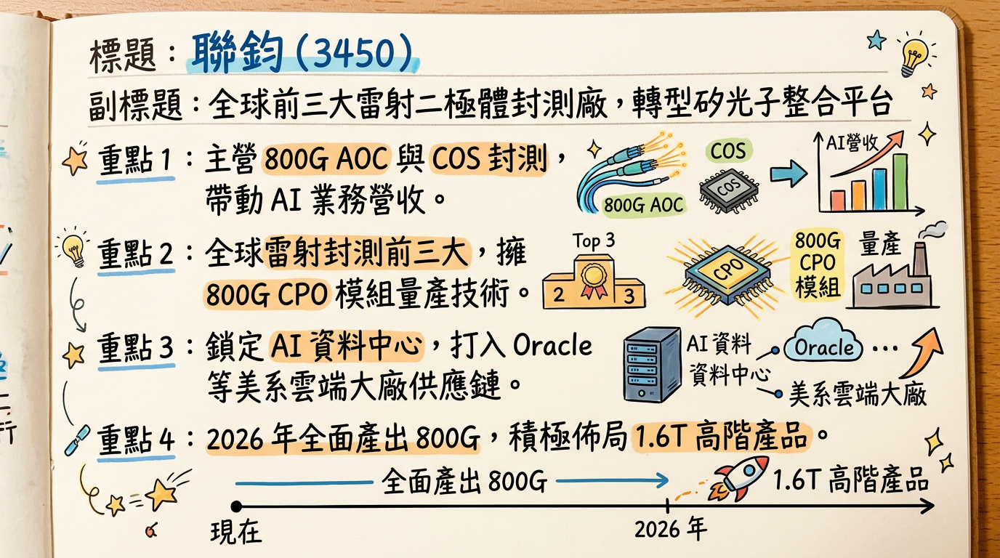
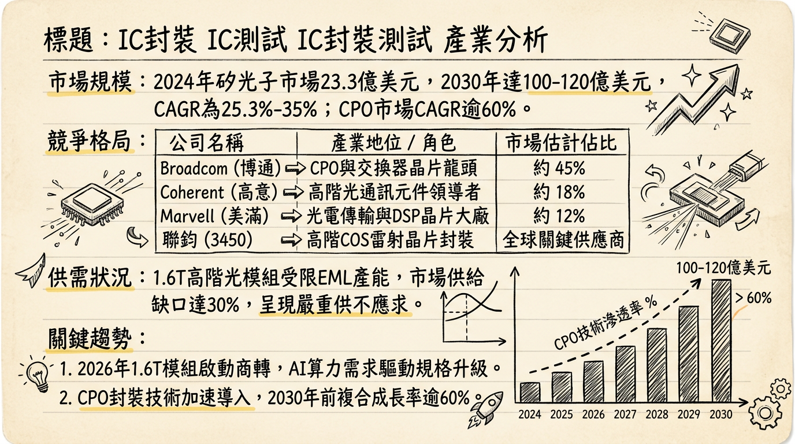
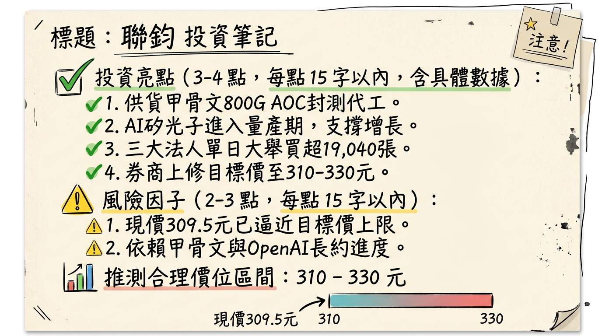

3450 聯鈞 深度研究報告
日期： 2026 年 03 月 01 日
研究對象： 聯鈞 (3450.TW)
評等： 強力買進 / 成長轉折點
## 一句話摘要
聯鈞已由傳統雷射封測成功轉型為 AI 高速光通訊與矽光子核心平台，隨 2026 年 800G/1.6T 產品進入放量期，預期 EPS 將挑戰雙位數成長，迎來業績與估值的雙重提升。
## 公司概覽
聯鈞（Elite Advanced Laser）為全球前三大雷射二極體（Laser Diode）封測 EMS 大廠，核心業務聚焦於光學元件封裝、模組組裝及測試。
業務佔營收比重（2025 前三季）
| 業務板塊 | 營收佔比 | 核心產品/服務內容 |
|---|
| 功率半導體（子公司捷敏-KY） | ~61% | 電源管理 IC、MOSFET 封測 |
| 矽光子相關產業 | ~22% | CPO (共封裝光學)、矽光子引擎、新技術應用 |
| 光電產業 (Data/Telcom) | ~21% | 400G/800G AOC、COS (雷射晶片封裝)、EML 封裝 |
## 核心競爭優勢
全球前三大雷射封測地位： 在高階雷射二極體領域具備規模化與高良率優勢，為 IDM 大廠首選夥伴。
矽光子生態系領先者： 與台積電（TSMC）COUPE 技術深度綁定，具備 800G 以上 CPO 封裝量產驗證能力。
垂直整合能力： 透過子公司「源傑」與「捷敏」，掌握光模組設計與功率半導體封測，優化 800G/1.6T 成本結構。
美系去中化受惠： 受惠於 Amazon, Google, Oracle 等雲端服務供應商（CSP）將訂單由中資廠轉向台廠。
## 財務分析
近 6 個月營收趨勢表格
| 月份 | 營收金額 (億新台幣) | 月增率 (MoM) | 年增率 (YoY) | 備註 |
|---|
| 2026/01 | 7.52 | -5.10% | -8.52% | 傳統淡季及基期較高影響 |
| 2025/12 | 7.92 | +25.49% | -3.99% | 年底急單與庫存調節結束 |
| 2025/11 | 6.31 | -9.70% | -19.81% | 客戶進行庫存調節尾聲 |
| 2025/10 | 6.99 | +8.29% | -19.17% | 營運緩步復甦 |
| 2025/09 | 6.45 | +8.47% | -19.10% | Q3 底部確立 |
| 2025/08 | 5.95 | -3.32% | -9.61% | 需求疲軟期 |
季度獲利概況
- 2025 Q3 表現： 季營收 18.55 億元（年減 11.66%），單季 EPS 0.61 元。
- 獲利趨勢： 2025 年前三季累計 EPS 為 3.48 元。市場預估 2025 全年 EPS 約在 4.68 ~ 6.5 元區間，視 Q4 回溫力道而定。
## 法說會重點（2025/11/19 內容彙整）
- 800G AOC 展望： 管理層確認 2025 下半年已完成客戶驗證，預計於 2026 年逐季放量。
- COS 產能供不應求： 高階雷射封裝需求極強，2025 年產能已擴增 5 倍，但 2026 年初仍維持滿載，將持續擴產。
- 庫存調節結束： 2025 Q2-Q3 客戶（如 Oracle）進行庫存調節，導致營收短暫回檔，但 2025 年底庫存結構已轉向健康。
- 2026 Guidance： 管理層明確指出，2026 年在 800G 與 1.6T 產品貢獻下，營收、獲利與毛利率均將顯著優於 2025 年。
## 券商觀點
最新目標價表格
| 券商名稱 | 目標價 (TWD) | 評等 | 報告日期 | 關鍵觀點 |
|---|
| 康和證券 | 322 | 買進 | 2025/12/24 | 800G 放量，獲利結構轉佳 |
| 凱基證券 | N/A | 強力買進 | 2026/02/23 | 2026 EPS 挑戰 10 元，上修估值 |
| 摩爾投顧 | 311 | 看多 | 2025/07/08 | (過時參考) 矽光子題材領頭羊 |
## 財報深度分析
利潤率趨勢表格 (2025)
| 指標 | 2025 Q1 | 2025 Q2 | 2025 Q3 | 趨勢分析 |
|---|
| 毛利率 (GPM) | 36.16% | 30.81% | 22.78% | Q3 受產能利用率下滑與產品組合波動影響 |
| 營業利益率 (OPM) | 24.08% | 22.28% | 10.50% | 反映開發 1.6T 相關研發費用投入 |
| 稅後淨利率 (NPM) | 20.88% | 7.15% | 9.85% | Q3 包含約 8,900 萬匯兌損失影響 |
- 資本支出 (CAPEX)： 2025 年前三季高達 11 億元（2024 年同期僅 2.5 億元），資金主要用於採購 800G 與 1.6T 自動化封測設備。
- 存貨分析： 截至 2025 Q3 存貨金額為 11.02 億元，存貨週轉天數 64.62 天，處於健康備料水平。
## 股權異動
- 董監持股： 近一年無大規模申報轉讓，籌碼面穩定。
- 法人動態： 2026 年 2 月底股價突破 300 元關卡之際，外資單週買超逾 1.6 萬張，顯示大戶資金積極卡位 2026 年業績爆發。
- 融資券： 隨股價上漲，融資餘額同步增加，市場熱度極高，需留意短線震盪。
## 產業分析
市場規模與趨勢
- 矽光子 (SiPh)： 全球市場 CAGR 達 25.3%~35%，2030 年有望破百億美元。
- CPO 趨勢： 2026 年定調為 CPO 商轉元年，預計 1.6T 模組出貨量將由 2025 年的 233 萬顆暴增至 1,416 萬顆。
競爭格局比較 (2025 預估)
| 公司 | 2026 EPS 展望 | 最新毛利率 | 核心優勢 |
|---|
| 聯鈞 (3450) | $8.0 - $10.0 | 31% ~ 36% | COS 封裝、台積電 CPO 生態系 |
| 華星光 (4979) | $7.0 - $9.0 | 28% ~ 32% | 800G 模組組裝、中小型 CSP 客戶 |
| 光聖 (6442) | $13.0 - $15.0 | 45% ~ 60% | 光纖連接器、高毛利美系資料中心單 |
## 近期催化劑
- 【利多】 2026/02/26 股價觸及 309.5 元 漲停，突破長期壓力位。
- 【利多】 甲骨文（Oracle）取得 OpenAI 算力長單，聯鈞為 800G AOC 直接受益者。
- 【利多】 2026 下半年 1.6T 樣品出貨驗證，將帶動下一波評價調升。
- 【利空】 2026 年 2 月初曾因資產購入延遲公告受罰，反映內控仍有改善空間。
- 【利空】 1.6T 產品良率挑戰。
## ⭐ 成長動能時間軸
- 2025 Q3 - Q4： 資本支出激增至 11 億元，COS 產能擴至 350 萬顆/月。
- 2026 Q1： 800G AOC 正式逐季放量，營收預期恢復 MoM/YoY 雙成長。
- 2026 Q2： 進入 GB300 晶片帶動的光通訊需求波段，預計 EML 封裝訂單滿載。
- 2026 H2： 台積電 COUPE 架構量產，聯鈞 CPO 封裝貢獻顯現；1.6T 進入初期量產。
## 2026 展望
- 成長動能： 800G 滲透率提升、COS 產能翻倍貢獻、美系 CSP 客戶訂單份額擴張。
- 風險： 地緣政治導致美國關稅變動、矽光子轉型期毛利波動、1.6T 技術路徑競爭。
## 投資結論
營運轉折確立： 2025 年為投資擴產期，2026 年為獲利兌現期，法人預估 EPS 挑戰 10 元，目前股價處於業績爆發初期。
技術領先優勢： 作為台積電矽光子聯盟核心成員，長期競爭門檻高。
評價調升空間： 參考光聖、華星光之本益比，聯鈞目前本益比約 25-30 倍，隨 1.6T 進度推進，有望向 35 倍靠攏。
建議目標價： 區間 320 - 360 元，若 2026 Q2 營收年增率轉正且毛利率回升至 35% 以上，可進一步上修。
本報告由 AI 自動產生，資料來源為公開網路資訊，僅供參考，不構成投資建議。
產生時間：2026-03-01 03:36
📊 資訊卡


